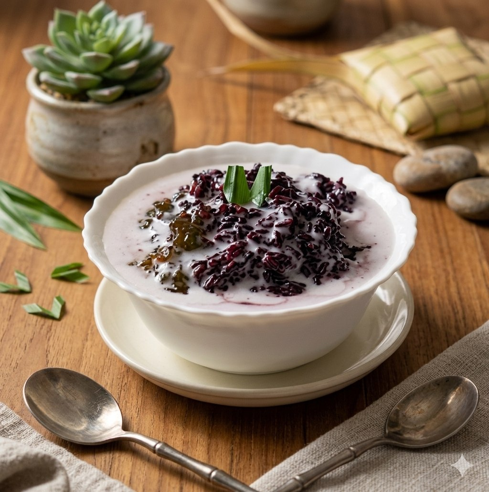

ထားဝယ်ရိုးရာ သာခွေယိုင် (မုန့်ငချိပ်ပေါင်း) ကို အိမ်မှာပဲ ထမင်းပေါင်းအိုးနဲ့ အလွယ်တကူ ပြုလုပ်နိုင်တဲ့ နည်းလမ်းကို ဖော်ပြပေးလိုက်ပါတယ်။
ကောက်ညှင်းငချိပ်နှင့် ကောက်ညှင်းဖြူကို ရောပြီး ရေစင်အောင်ဆေးပါ။ ဆန်နူးညံ့စေရန် ရေမြုပ်ရုံထည့်၍ အနည်းဆုံး ၆ နာရီမှ ၈ နာရီအထိ (သို့မဟုတ် တစ်ညကြို၍) ရေစိမ်ထားပါ။
ရေစိမ်ထားသော ဆန်များကို ထမင်းပေါင်းအိုးထဲထည့်ပါ။ ရေ ၅ ခွက်၊ သကြားညို ၁၂ ဇွန်း၊ ဆား အနည်းငယ်ထည့်၍ သမအောင်မွှေပြီး Cook ခလုတ်နှိပ်၍ ပုံမှန်အတိုင်း ချက်ပေးပါ။
အုန်းနို့ဆမ်းရည် ပြုလုပ်ခြင်း: အိုးတစ်လုံးထဲတွင် အုန်းနို့ ၆၀၀ မီလီလီတာ၊ သကြားဖြူ ၅ ဇွန်းနှင့် ဆားအနည်းငယ်ကို ရောမွှေပါ။ မီးအသင့်အတင့်ဖြင့် ဆူပွက်လာသည်အထိ ကျိုပေးပါ။
ကောက်ညှင်းကျက်သွားပါက ပန်းကန်ထဲခတ်ထည့်ပါ။ အပေါ်မှ ကျိုထားသော အုန်းနို့ဆမ်းရည် ပူပူလေးကို ဆမ်း၍ အရသာရှိစွာ သုံးဆောင်နိုင်ပါပြီ။